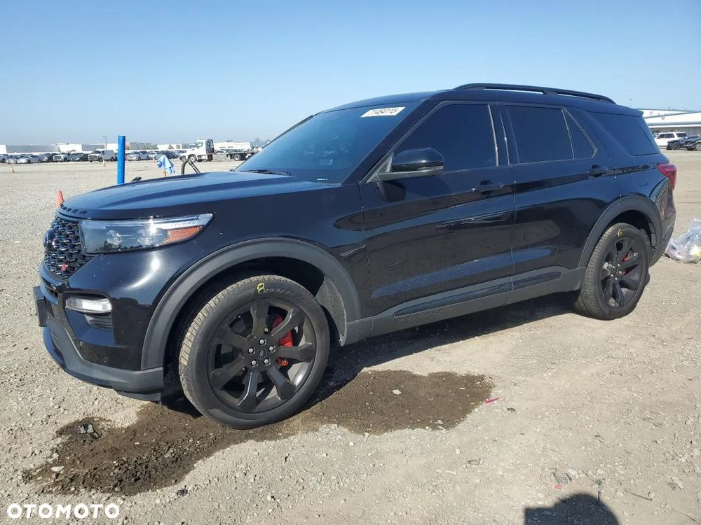
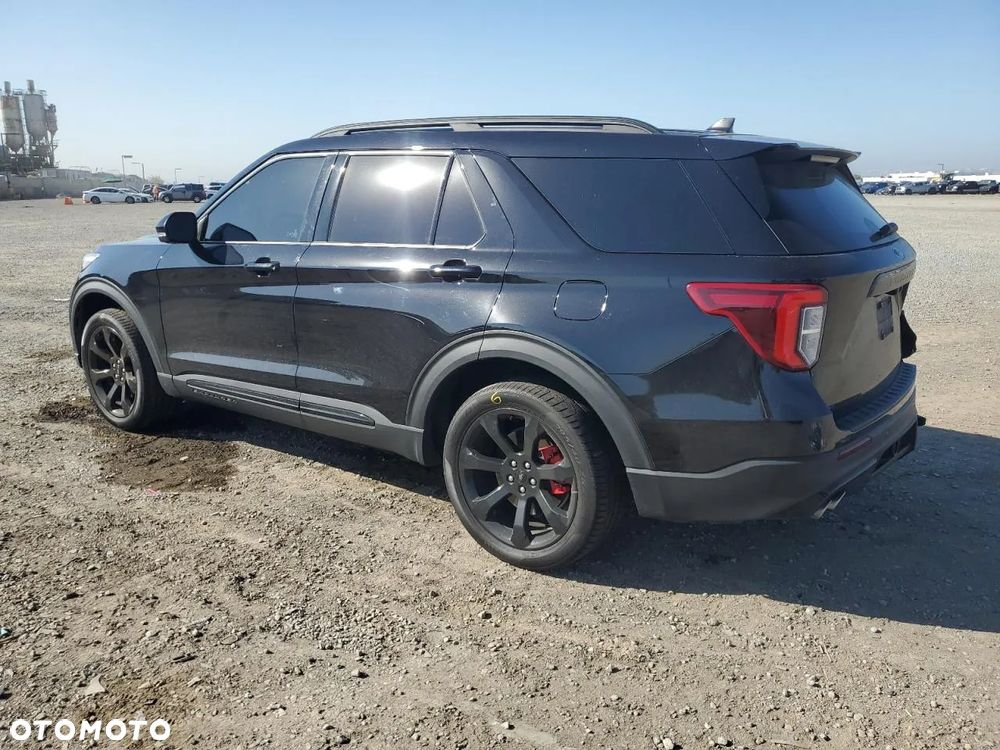
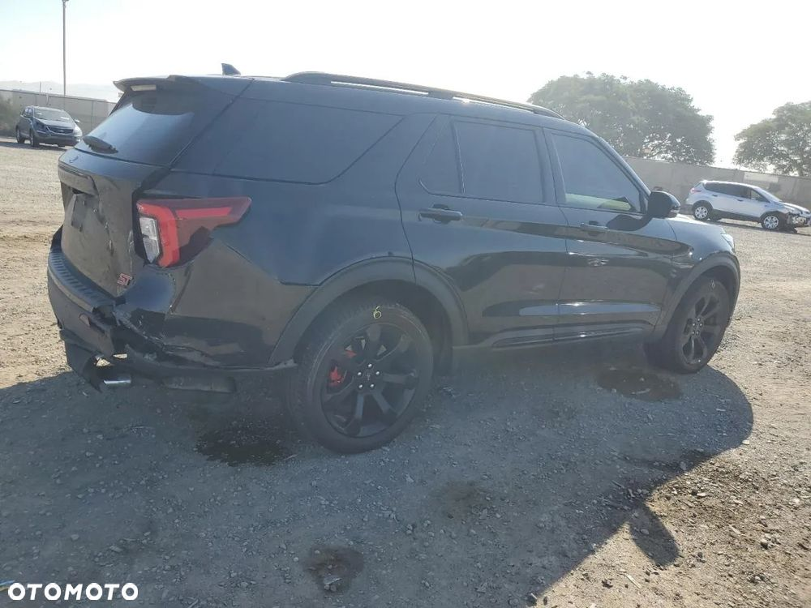
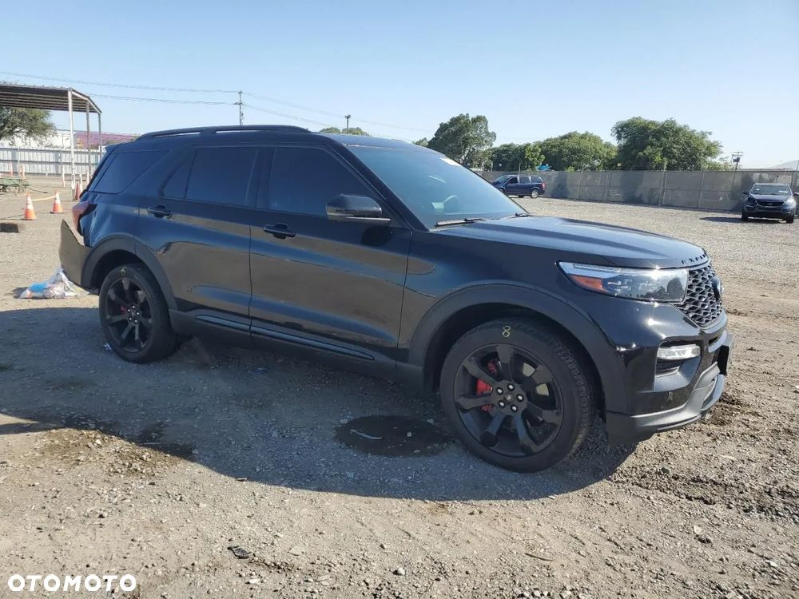
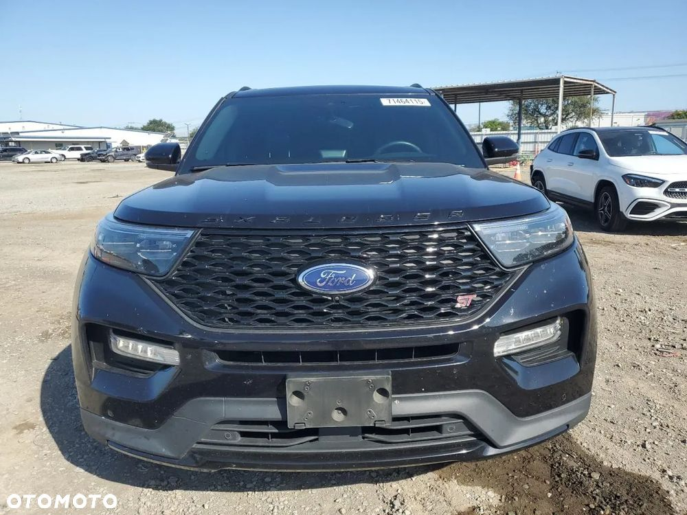
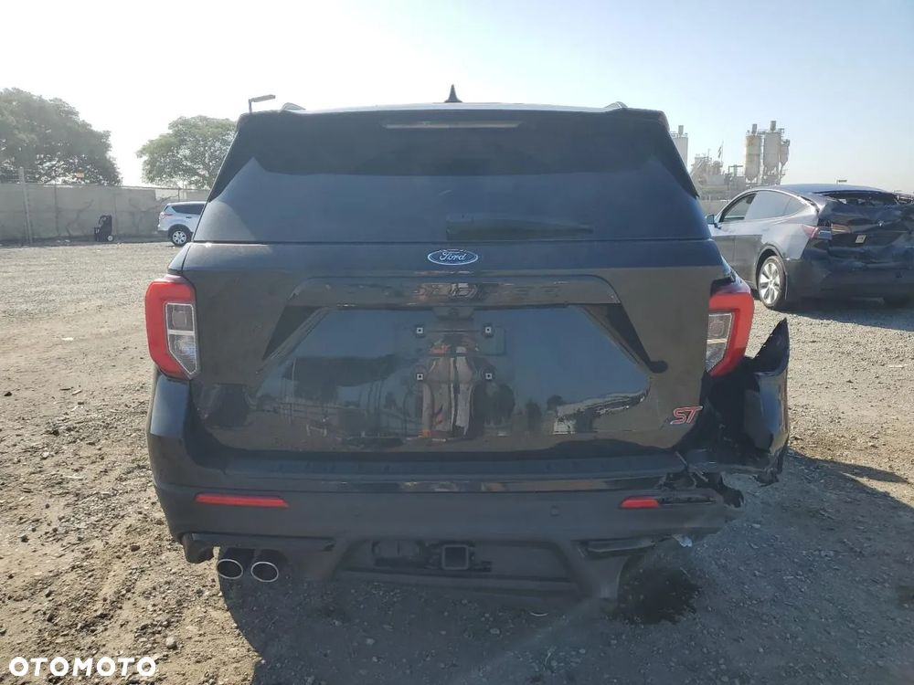
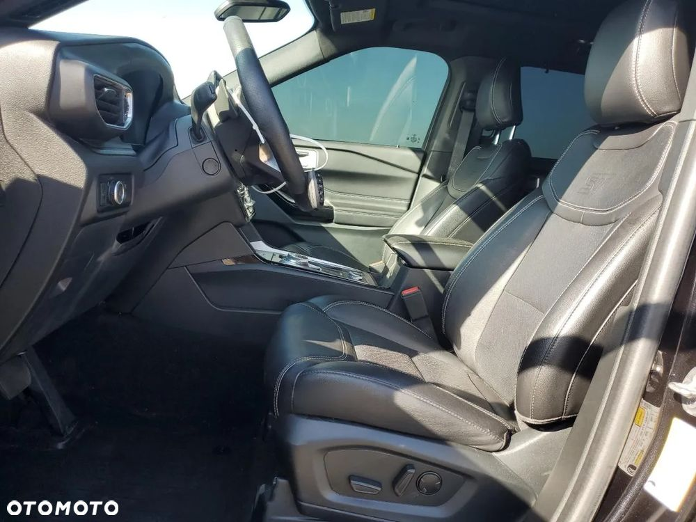
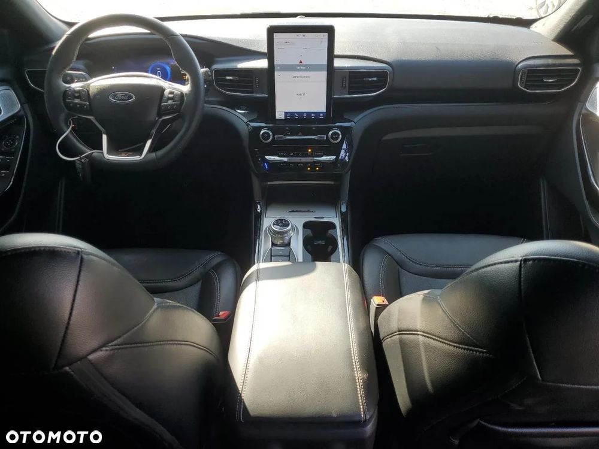
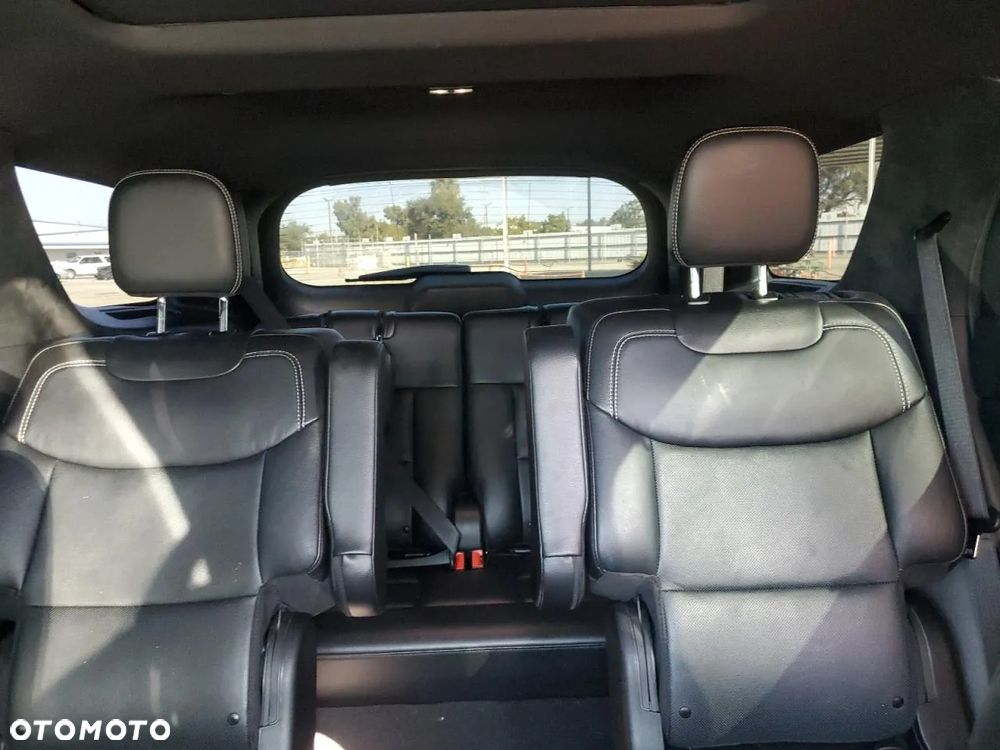
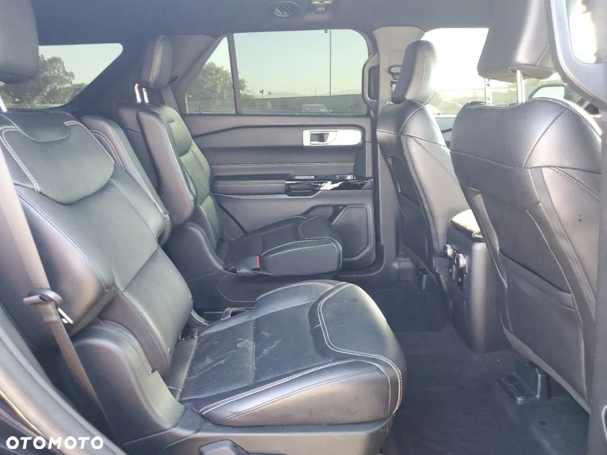

Na sprzedaż FORD EXPLORER ST po lekkiej szkodzie widocznej na zdjęciach, auto wcześniej bezwypadkowe ,serwisowany w bogatej wersji wyposażenia z pięknym środkiem. Posiadamy w ofercie również inne egzemplarze w różnych wersjach silnikowych
Auto aktualnie znajduje się w Stanach Zjednoczonych, co oznacza, że jest dostępne na licytacji. Chętnie pomożemy w jego zakupie oraz zajmiemy się całą logistyką sprowadzenia go do Polski.
Szukasz innego pojazdu? Oferowane przez nas samochody pochodzą tylko i wyłącznie od największych amerykańskich firm ubezpieczeniowych lub poleasingowych.
Dodatkowo każde auto przed licytacja jest gruntownie sprawdzane pod względem jego historii, wcześniejszej wypadkowości oraz wielu innych aspektów aby zapewnić klientowi 100% bezpieczeństwa!
Skontaktuj się z nami. W naszej ofercie ponad 300.000 pojazdów, które mogą być twoje.
Każde auto sprawdzamy wnikliwie aby poznać jego wcześniejszą historię.
Nie odpowiada Ci prezentowany przez nas egzemplarz? - Skontaktuj się z nami, a przedstawimy pełną ofertę samochodów dostępnych w USA.
W czasie krótkiej niezobowiązującej rozmowy ustalimy szczegóły by wybrać pojazdy spełniające Twoje kryteria.
Spełnimy Twoje wymagania w 100%!
Zapraszamy do całodobowego kontaktu telefonicznego
Tel.
E-mail. kontakt@autolider.net.pl
Nasze realizacje znajdziesz na Facebooku:
Auto Lider import z USA
Lub
https://autolidersiedlce.pl/
O nas:
Zajmujemy się importem aut z USA i Kanady.
Osobisty opiekun do dyspozycji podczas całego procesu zakupu/importu pojazdu
Kompleksowe naprawy blacharsko lakiernicze, własny warsztat z 30 letnim doświadczeniem
Przygotowanie auta do norm europejskich, przeróbki, konwersje
Studio pielęgnacji pojazdów - pełny detailing pojazdu na miejscu
Własny transport lądowy, auta dostarczają nasi kierowcy
Całodobowy dostęp do naszego systemu śledzącego
Zapewniamy rzeczoznawcę, tłumacza oraz agencję celną przy dokonywaniu należności akcyzowych
Dostęp do prywatnych aukcji ubezpieczeniowych, współpraca z największymi w USA oraz Kanadzie ubezpieczalniami
Powyższa oferta ma charakter informacyjny i nie stanowi oferty handlowej w rozumieniu art. 66 §1 Kodeksu Cywilnego
